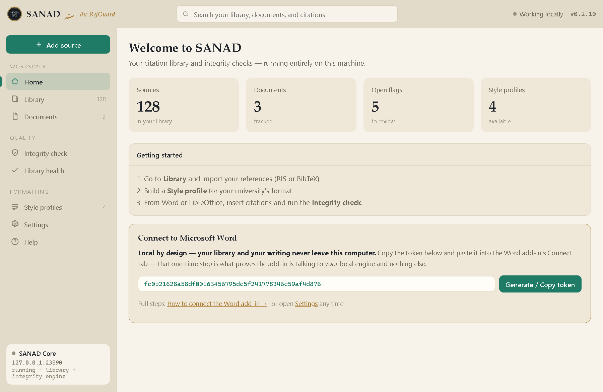

SANAD سند
Check that every citation is actually right — the right source, cited in the right place — without ever touching a word of your prose.
A free, open-source, local-first citation companion for Microsoft Word and LibreOffice. No account. No cloud. Your library and your writing never leave your computer.
Free & open source · Local-first · AGPL-3.0 · Windows

Beyond formatting — integrity
Most tools make a citation look right. SANAD checks whether it is right, entirely on your own machine.
Context-integrity checking
Wrong in-text year, a book resolved to a review venue, orphaned or duplicate references, author–year ambiguity — and a citation dropped into the wrong context, with a closer source suggested from your own library.
Local-first & private
The engine runs on 127.0.0.1 and makes no outbound connections. No account, no cloud, no telemetry. Your unpublished work stays yours.
Never touches your prose
SANAD only writes inside its own citation and bibliography fields — enforced in code and proven by a fuzz test, not just promised.
Handbook-driven formatting
Turn your university's rules into a shareable Style Profile — indent, "et al." threshold, ampersand, spacing — over a real CSL style.
Right inside Word
The add-in puts SANAD inside Word — Insert a citation, rebuild the Bibliography, and run an Integrity check without leaving your document. It talks only to your local engine, so your document never goes online.
Catches R1–R8: wrong year, review-venue mix-ups, orphaned/duplicate/uncited references, ambiguous author–year, and out-of-context citations.

Get started in 3 steps
Your work stays on your machine
SANAD is local-first: your library is a single file on your computer, the engine listens only on 127.0.0.1, and it makes no outbound connections. Other reference tools sync your library to their servers — SANAD doesn't.